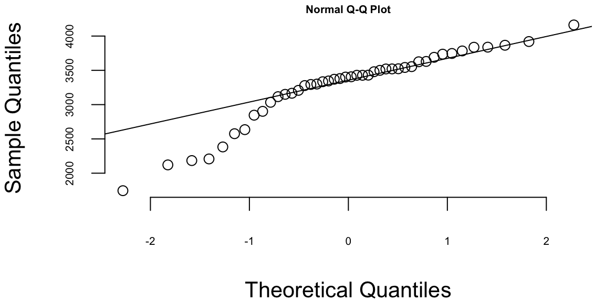
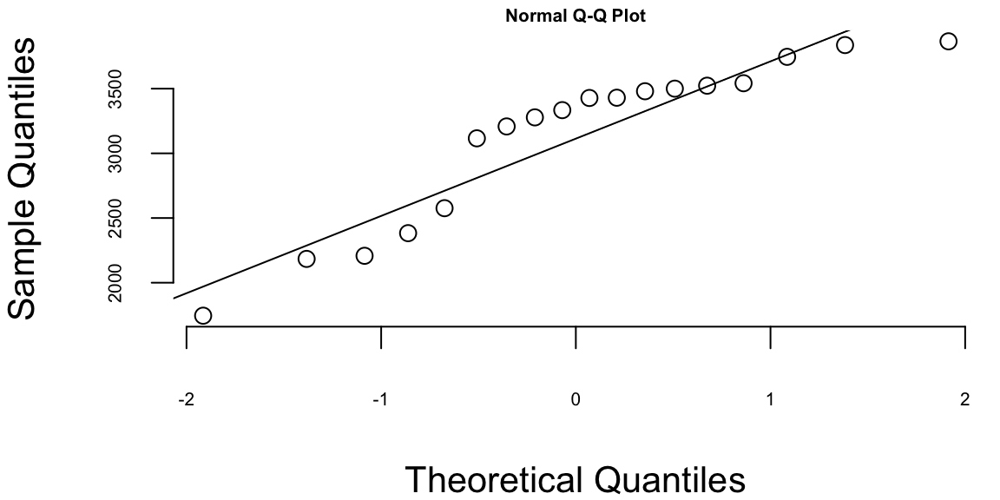
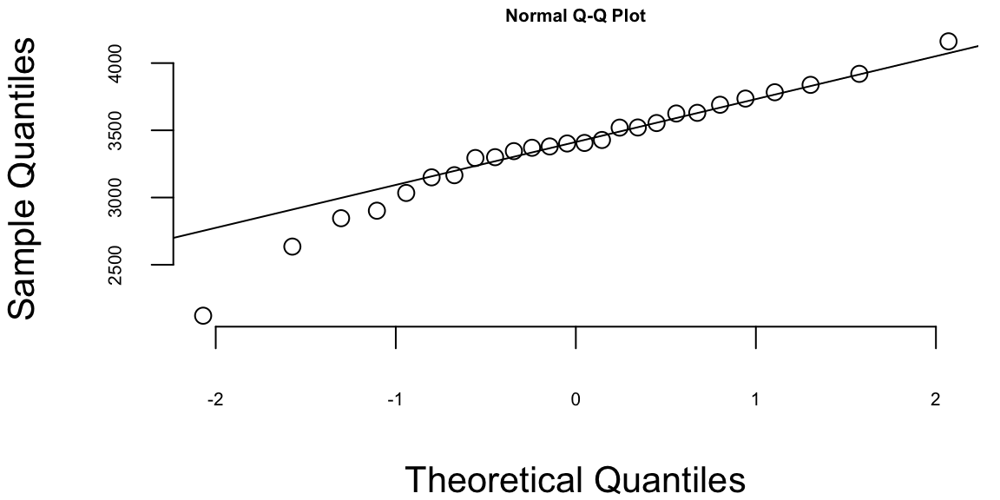
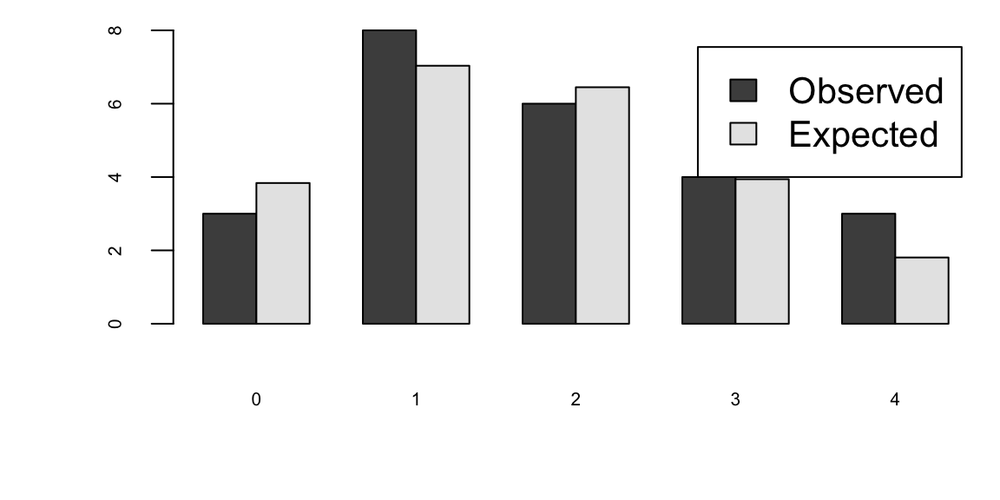
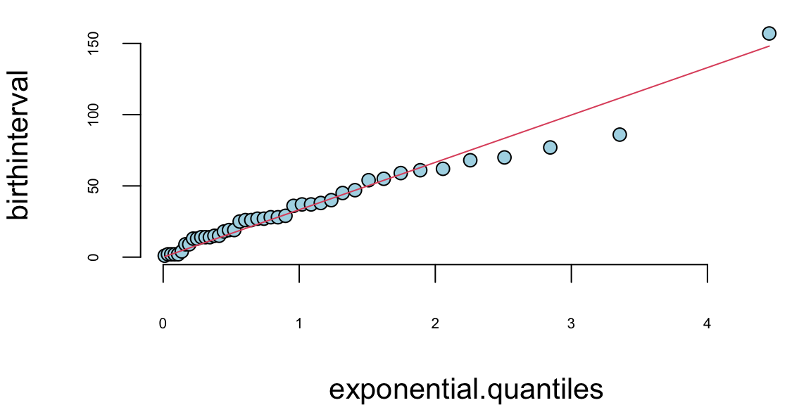
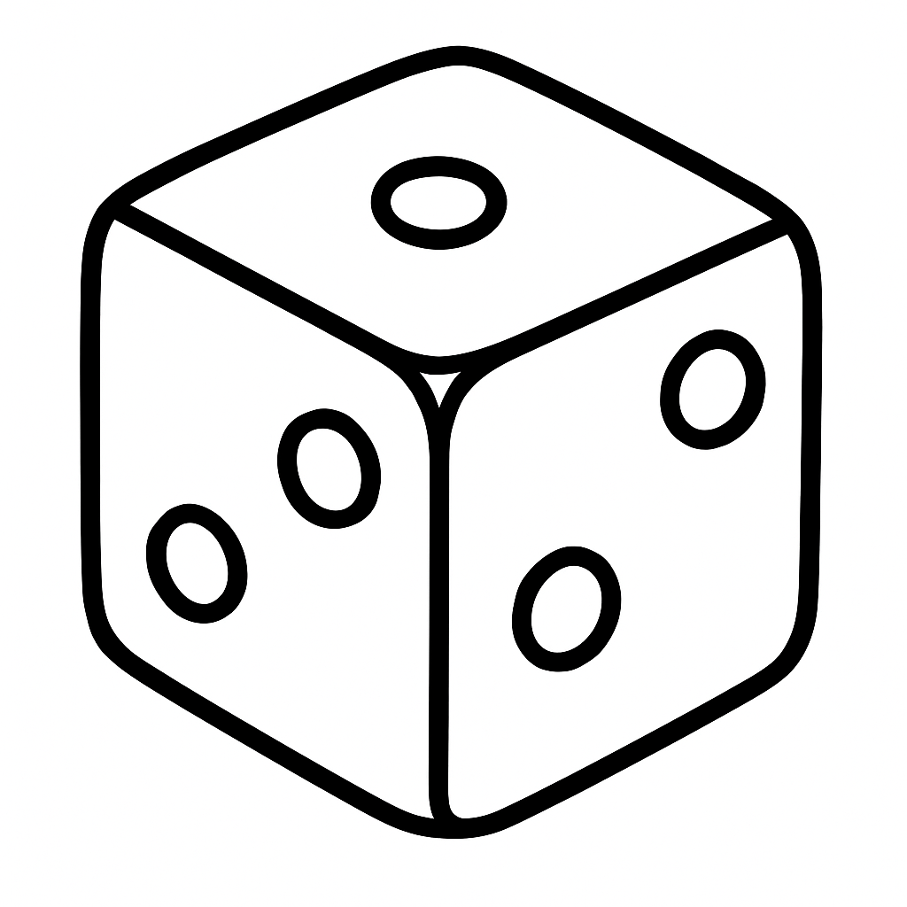
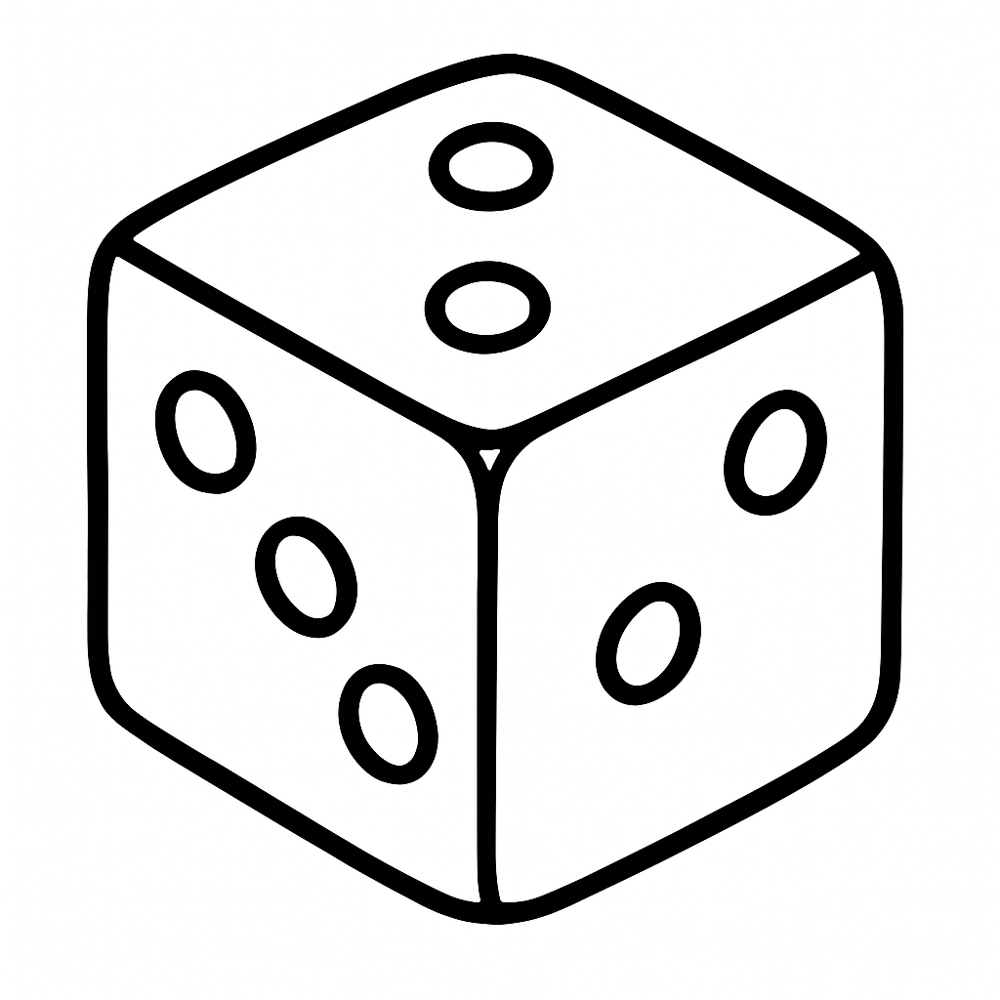
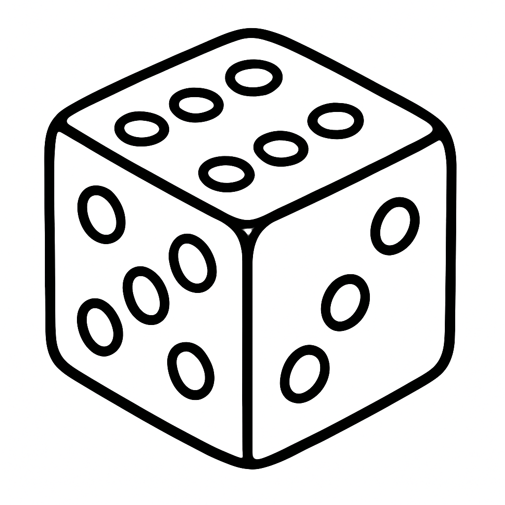

babyboom = read.csv("../data/babyboom.csv")
qqnorm(babyboom$wt)
qqline(babyboom$wt)

“When you have eliminated impossible, whatever remains, however improbable, must be the truth.” - Sherlock Holmes
In the world of statistical modeling and machine learning, we face a fundamental challenge that echoes Sherlock Holmes’ famous words about eliminating the impossible to find the truth. When confronted with data, we must navigate through countless possible models, each representing a different hypothesis about the underlying relationships in our data. The art and science of model selection lies in systematically choosing the model that best captures the true signal while avoiding the trap of fitting noise. This chapter explores the critical decisions on how to choose the right model.
In previous chapter Chapter 18 we focussed on regularization techniques, which also can be viewd as a model selection mechanis. Specifically, we will discuss Ridge regression, LASSO, and their Bayesian interpretations. These methods offer elegant solutions to the overfitting problem by introducing penalties for model complexity, automatically balancing fit and parsimony. We’ll see how these frequentist approaches connect to Bayesian thinking through the lens of prior distributions and posterior inference.
We begin by examining the fundamental considerations that guide model selection: the bias-variance tradeoff, the challenges of overfitting and underfitting, and the practical constraints of computational resources and data quality. We’ll explore how the purpose of our analysis—whether prediction or interpretation—should influence our modeling choices, drawing on Leo Breiman’s influential distinction between the “two cultures” of statistical modeling.
The chapter then delves into practical methodologies for model evaluation and selection. We’ll cover exploratory data analysis techniques that help us understand our data before committing to a particular model form, followed by rigorous approaches to measuring out-of-sample performance through cross-validation and information criteria. These tools provide the foundation for making principled decisions about model complexity.
By the end of this chapter, you’ll have a comprehensive toolkit for approaching model selection problems, understanding when different techniques are appropriate, and implementing these methods in practice. Most importantly, you’ll develop the judgment to balance the competing demands of accuracy, interpretability, and computational efficiency that characterize real-world modeling challenges.
Let us start with several important considerations when building predictive models.
1. Model Selection: Choosing the right model for the relationship between \(x\) and \(y\) is crucial and involves navigating a fundamental trade-off between model complexity and generalization ability. If the chosen model is too simple (e.g., linear regression when the true relationship is polynomial), it might underfit the data and fail to capture important relationships, leading to high bias and poor performance on both training and test data. Conversely, a model that is too complex (e.g., high-degree polynomials or deep neural networks with insufficient data) might overfit the data by memorizing training examples rather than learning the underlying pattern, resulting in excellent training performance but poor generalization to unseen examples. This problem becomes even more complex when dealing with non-linear relationships, high-dimensional data, or noisy data, where the optimal model complexity is not immediately obvious and may require systematic experimentation with different model architectures, regularization techniques, and hyperparameter tuning to find the right balance between capturing the true signal while avoiding noise.
2. Overfitting and Underfitting: Overfitting occurs when the model fits the training data too closely, capturing not only the true underlying relationship but also random noise and idiosyncrasies specific to the training dataset. This phenomenon typically manifests when a model has too many parameters relative to the amount of training data available, allowing it to essentially “memorize” the training examples rather than learning the generalizable patterns. The model may achieve excellent performance metrics on the training data (low training error) but will perform poorly on new, unseen data (high generalization error). This is because the model has learned to recognize specific noise patterns in the training data that don’t exist in the broader population. Common signs of overfitting include a large gap between training and validation/test performance, or performance that improves on training data while degrading on validation data during training iterations.
Underfitting occurs when the model is too simple and fails to capture the true relationship between \(x\) and \(y\), often due to insufficient model complexity or inadequate training. This can happen when using a model that is inherently too simple for the problem at hand (e.g., linear regression for a highly non-linear relationship), when the model hasn’t been trained for enough iterations, or when regularization is applied too aggressively. Underfitting results in poor performance on both training and test data, as the model lacks the capacity to learn the underlying patterns in the data. The model essentially misses important features or relationships that are necessary for accurate predictions. Unlike overfitting, underfitting typically shows similar poor performance across training, validation, and test sets, indicating that the model is not capturing the signal in the data regardless of the dataset.
3. Data Quality and Quantity: The accuracy of predictions heavily relies on the quality and quantity of the available data. If the data is noisy, inaccurate, or incomplete, it can lead to misleading predictions. A sufficient amount of data is also crucial to ensure the model can learn the underlying relationship effectively. Insufficient data can result in underfitting and poor generalization.
Data quality issues can manifest in various forms, including missing values, inconsistent formatting, labeling errors, and biased sampling. These problems are particularly acute in machine learning applications where large volumes of labeled data are required for training. To address these challenges, companies have emerged that specialize in data quality improvement and annotation services.
Companies like Scale AI and Toloka provide platforms that help organizations improve data quality through human-in-the-loop annotation and validation processes. These platforms employ large networks of human annotators who can perform tasks such as image labeling, text classification, data validation, and quality control. Scale AI, for example, offers services for creating high-quality training datasets through human annotation, with built-in quality control mechanisms that include multiple annotators per task and consensus-based validation. Their platform can handle various data types including images, text, and video, making it suitable for computer vision, natural language processing, and other AI applications.
Toloka, similarly, provides a crowdsourcing platform that connects businesses with a global network of contributors who can perform data labeling, content moderation, and quality assessment tasks. Their platform includes quality control features such as skill-based routing, where tasks are assigned to annotators based on their demonstrated expertise, and dynamic overlap, where multiple workers verify the same data to ensure accuracy.
These platforms help address several key data quality challenges: they can identify and correct labeling errors through consensus mechanisms, handle missing data through targeted collection efforts, and ensure consistency in data formatting and annotation standards. By leveraging human expertise at scale, these services enable organizations to create more reliable training datasets, which in turn leads to better-performing machine learning models and more accurate predictions.
4. Model Explainability: In many applications, it is crucial to understand how the model arrives at its predictions. This is particularly important in areas like healthcare or finance, where transparency and interpretability are essential. Some models, particularly complex ones like deep neural networks, can be difficult to interpret, making it challenging to understand the rationale behind their predictions. However, modern machine learning has developed several techniques to address this challenge and make complex models more interpretable.
The importance of explainability extends beyond mere curiosity about model behavior. In healthcare applications, doctors need to understand why a model recommended a particular diagnosis or treatment plan to make informed decisions and maintain trust in the system. A model that predicts a patient has a 90% chance of having cancer but cannot explain which symptoms or test results led to this conclusion would be of limited clinical value. Similarly, in financial services, regulators require explanations for credit decisions to ensure compliance with fair lending laws and to prevent discriminatory practices. When a loan application is denied, both the applicant and regulatory bodies need to understand the specific factors that influenced this decision.
In legal and compliance contexts, explainability becomes a legal requirement. The European Union’s General Data Protection Regulation (GDPR) includes a “right to explanation” that allows individuals to request information about automated decisions that affect them. This has created a legal imperative for organizations to develop explainable AI systems. In criminal justice applications, where AI systems might be used for risk assessment or sentencing recommendations, the stakes are particularly high. Judges, lawyers, and defendants all need to understand how these systems arrive at their conclusions to ensure fair and just outcomes.
One prominent approach is the use of interpretable surrogate models, such as LIME (Local Interpretable Model-agnostic Explanations) and SHAP (SHapley Additive exPlanations). These methods work by approximating the complex model’s behavior in the vicinity of a specific prediction using simpler, more interpretable models like linear regression or decision trees. LIME, for instance, creates local explanations by sampling points around the prediction of interest and fitting a linear model to explain the model’s behavior in that neighborhood. This allows us to understand which features contributed most to a particular prediction, even for complex models like deep neural networks.
Another powerful technique is attention mechanisms, which have become increasingly popular in natural language processing and computer vision. Attention mechanisms allow models to “focus” on specific parts of the input when making predictions, providing a form of built-in interpretability. For example, in image classification tasks, attention maps can highlight which regions of an image the model is focusing on when making its prediction, making it easier to understand the model’s decision-making process.
Gradient-based methods offer another approach to model interpretability. Techniques like Grad-CAM (Gradient-weighted Class Activation Mapping) use gradients to identify which parts of the input are most important for the model’s prediction. By computing the gradient of the model’s output with respect to the input features, these methods can create heatmaps that show which features or regions contributed most to the final prediction.
For tree-based models like random forests and gradient boosting machines, built-in feature importance measures provide natural interpretability. These methods can rank features based on their contribution to the model’s predictive performance, offering insights into which variables are most important for making predictions.
Model distillation techniques represent another approach, where a complex model (the teacher) is used to train a simpler, more interpretable model (the student) that mimics the teacher’s behavior. The student model, being simpler, is easier to interpret while maintaining much of the teacher’s predictive performance.
Finally, counterfactual explanations provide a different type of interpretability by showing what changes to the input would be needed to change the model’s prediction. For example, if a loan application is rejected, a counterfactual explanation might show that the application would have been approved if the applicant’s income were $10,000 higher or if their credit score were 50 points better.
These modern interpretability techniques have made it possible to understand and explain the behavior of even the most complex models, addressing the “black box” problem that has historically limited the adoption of advanced machine learning methods in critical applications where transparency is essential.
5. Computational Cost: Training and using prediction models can be computationally expensive, especially for complex models with large datasets. This can limit their applicability in resource-constrained environments. Finding a balance between model complexity, accuracy, and computational cost is critical for practical applications.
The computational demands of machine learning models have been significantly addressed through the development of specialized hardware, particularly Graphics Processing Units (GPUs). Originally designed for rendering graphics in video games, GPUs have become essential for deep learning due to their parallel processing architecture. Unlike traditional Central Processing Units (CPUs) that process tasks sequentially, GPUs can perform thousands of mathematical operations simultaneously, making them ideal for the matrix multiplications and tensor operations that are fundamental to neural network training. This parallel processing capability has reduced training times from weeks to hours or even minutes for many deep learning models, democratizing access to advanced machine learning techniques.
However, the computational cost challenge extends beyond just training to the deployment phase, where models need to run efficiently in production environments. This has led to the emergence of edge computing as a crucial solution. Edge computing involves processing data and running models closer to where the data is generated, rather than sending everything to centralized cloud servers. This approach offers several advantages for machine learning applications: reduced latency for real-time predictions, lower bandwidth costs by processing data locally, and improved privacy by keeping sensitive data on local devices.
Edge computing is particularly important for applications requiring real-time decision making, such as autonomous vehicles, industrial IoT systems, and mobile applications. For example, a self-driving car cannot afford the latency of sending sensor data to a cloud server and waiting for predictions to return; it needs to process information and make decisions locally within milliseconds. Similarly, smart manufacturing systems use edge computing to monitor equipment and predict maintenance needs in real-time without the delays associated with cloud processing.
Quantization and lower precision calculations have emerged as powerful techniques for reducing computational costs while maintaining model performance. Traditional neural networks use 32-bit floating-point numbers (FP32) for all calculations, which provides high precision but requires significant computational resources and memory. Quantization reduces the precision of these numbers, typically to 16-bit (FP16), 8-bit integers (INT8), or even 4-bit integers (INT4), dramatically reducing both memory usage and computational requirements. For example, converting from FP32 to INT8 can reduce memory usage by 75% and computational cost by 2-4x, while often maintaining acceptable accuracy levels. This is particularly valuable for deployment on edge devices with limited resources, such as smartphones, IoT devices, and embedded systems. Modern hardware, including specialized AI accelerators like Google’s Tensor Processing Units (TPUs) and NVIDIA’s Tensor Cores, are specifically designed to handle these lower precision calculations efficiently, further reducing the computational cost barrier.
The trade-offs between computational cost and model performance are becoming increasingly sophisticated. Techniques like model pruning, which removes unnecessary connections from neural networks, can create smaller, faster models. Knowledge distillation allows large, complex models to transfer their knowledge to smaller, more efficient models that can run on resource-constrained devices.
These developments have created a spectrum of deployment options, from powerful cloud-based systems that can run the most complex models to lightweight edge devices that can perform basic predictions locally. The choice depends on the specific requirements of the application, including latency requirements, accuracy needs, privacy concerns, and cost constraints. As hardware continues to improve and optimization techniques become more sophisticated, the computational cost barrier to deploying machine learning models continues to decrease, opening up new possibilities for AI applications in previously inaccessible domains.
6. Ethical Considerations: Predictions can have significant real-world consequences, raising ethical concerns about bias, fairness, and potential misuse. It is crucial to consider the potential harms and unintended consequences of predictions and implement safeguards to mitigate them.
The ethical implications of predictive models have become increasingly prominent as these systems are deployed in critical domains such as healthcare, criminal justice, employment, and financial services. One of the most significant concerns is algorithmic bias, which can perpetuate or amplify existing societal inequalities. For example, facial recognition systems have been shown to have higher error rates for people of color, potentially leading to wrongful arrests or surveillance. Similarly, hiring algorithms trained on historical data may perpetuate gender or racial biases present in past hiring decisions, creating a feedback loop that reinforces discrimination.
Fairness in machine learning has emerged as a critical research area, with multiple definitions and approaches to ensure equitable treatment across different demographic groups. Statistical parity, equalized odds, and individual fairness are among the various fairness metrics that can be applied depending on the specific context and requirements of the application. However, achieving fairness often involves trade-offs with model accuracy, and different fairness definitions may conflict with each other, requiring careful consideration of which definition is most appropriate for a given use case.
The potential for misuse of predictive models is another significant concern. Models designed for legitimate purposes can be repurposed for harmful applications, such as using facial recognition for mass surveillance or employing predictive policing algorithms that disproportionately target certain communities. Additionally, the increasing sophistication of deepfake technology, which uses predictive models to generate realistic but fake images, videos, or audio, raises concerns about misinformation and manipulation.
Privacy concerns arise when predictive models require access to sensitive personal data. The collection, storage, and processing of personal information for training and deploying these models can violate individual privacy rights and create risks of data breaches. Differential privacy techniques, which add carefully calibrated noise to data or model outputs, have emerged as a promising approach to protect individual privacy while maintaining model utility.
Transparency and accountability are essential for addressing ethical concerns. Organizations deploying predictive models must be able to explain their decisions and be held accountable for any harms that result. This includes maintaining audit trails, implementing human oversight mechanisms, and establishing clear procedures for addressing complaints or errors. The concept of “algorithmic impact assessments” has been proposed as a framework for evaluating the potential social impacts of automated decision-making systems before deployment.
Regulatory frameworks are evolving to address these ethical challenges. The European Union’s General Data Protection Regulation (GDPR) includes provisions for automated decision-making and profiling, while various jurisdictions are developing specific regulations for AI systems. These regulations often require transparency, human oversight, and the ability to contest automated decisions.
Technical approaches to addressing ethical concerns include adversarial training to reduce bias, interpretability techniques to increase transparency, and robust testing procedures to identify potential harms before deployment. Regular monitoring and updating of deployed models is also crucial, as societal norms and legal requirements evolve over time.
Addressing these challenges requires careful consideration of the specific problem, selection of appropriate techniques, and continuous evaluation and improvement of the prediction model. It also requires collaboration between technical experts, domain specialists, ethicists, and stakeholders to ensure that predictive models serve the public good while minimizing potential harms.
As we have discussed at the beginning of this chapter the predictive rule can be used for two purposes: prediction and interpretation. The goal of interpretation is to understand the relationship between the input and output variables. The two goals are not mutually exclusive, but they are often in conflict. For example, a model that is good at predicting the target variable might not be good at interpreting the relationship between the input and output variables. A nice feature of a linear model is that it can be used for both purposes, unlike more complex predictive rules with many parameters that can be difficult to interpret.
Typically the problem of interpretation requires a simpler model. We prioritize models that are easy to interpret and explain, even if they have slightly lower predictive accuracy. Also, evaluation metrics are different, we typically use coefficient of determination (R-squared) or p-values, which provide insights into the model’s fit and the significance of the estimated relationships.
The choice between using a model for prediction or interpretation depends on the specific task and desired outcome. If the primary goal is accurate predictions, a complex model with high predictive accuracy might be preferred, even if it is less interpretable. However, if understanding the underlying relationships and causal mechanisms is crucial, a simpler and more interpretable model might be chosen, even if it has slightly lower predictive accuracy. Typically interpretive models are used in scientific research, social sciences, and other fields where understanding the underlying causes and relationships is crucial.
In practice, it’s often beneficial to consider both prediction and interpretation when building and evaluating models. However, it is not unusual to build two different models, one for prediction and one for interpretation. This allows for a more nuanced analysis of the data and can lead to better insights than using a single model for both purposes.
Let \(x\) be a high dimensional input containing a large set of potentially relevant data. Let \(y\) represent an output (or response) to a task which we aim to solve based on the information in \(x\). Brieman [2000] summaries the difference between statistical and machine learning philosophy as follows.
“There are two cultures in the use of statistical modeling to reach conclusions from data. One assumes that the data are generated by a given stochastic data model. The other uses algorithmic models and treats the data mechanism as unknown.”
“The statistical community has been committed to the almost exclusive use of data models. This commitment has led to irrelevant theory, questionable conclusions, and has kept statisticians from working on a large range of interesting current problems.”
“Algorithmic modeling, both in theory and practice, has developed rapidly in fields outside statistics. It can be used both on large complex data sets and as a more accurate and informative alternative to data modeling on smaller data sets. If our goal as a field is to use data to solve problems, then we need to move away from exclusive dependence on data models and adopt a more diverse set of tools.”
Statistical prediction problems are of great practical and theoretical interest. The deep learning predictor has a number of advantages over traditional predictors, including that
What makes a good model? If the goal is prediction, then the model is as good as its prediction. The easiest way to visualize the quality of the prediction is to plot \(y\) vs \(\hat y\). Most of the times we are to use empirical assesment of model’s quality. However, sometimes theoretical bounds can be derived for a model that describe it acuracy. For example, in the case of the linear regression model, the prediction interval is defined by \[ \hat y \pm s\sqrt{1+\frac{1}{n}+\frac{(x-\bar x)^2}{\sum_{i=1}^n(x_i-\bar x)^2}} \] where \(s\) is the standard deviation of the residuals. The prediction interval is the confidence interval for the prediction. The prediction interval is wider than the confidence interval because it includes the uncertainty in the prediction.
Assume we have predictive model \[ y = f(x) + \epsilon \] and we have some modeling assumption regarding the distribution of \(\epsilon\). For example, when we use linear regression or BART, we assume that \(\epsilon\) follows normal distribution. One simple approach to test if observed samples \(\epsilon_1,\ldots,\epsilon_n\) follow a specific distribution is to use an Exploratory Data Analysis (EDA).
The two most common tools for exploratory data analysis are Q-Q plot, scatter plots and bar plots/histograms.
A Q-Q plot simply compares the quantiles of your data with the quantiles of a theoretical distribution (like normal, exponential, etc.). Quantile is the fraction (or percent) of points below the given value. That is, the \(i\)-th quantile is the point \(x\) for which \(i\)% of the data lies below \(x\). On a Q-Q plot, if the two data sets come from a population with the same distribution, we should see the points forming a line that’s roughly straight. More precisely, if the two data sets \(x\) and \(y\) come from the same distribution, then the points \((x_{(i)}, y_{(i)})\) should lie roughly on the line \(y = x\). If \(y\) comes from a distribution that’s linear in \(x\), then the points \((x_{(i)}, y_{(i)})\) should lie roughly on a line, but not necessarily on the line \(y = x\).
Example 17.1 (Normal Q-Q plot) Figure 17.1 shows the normal Q-Q plot for the Data on birth weights of babies born in a Brisbane hospital on December 18, 1997. The data set contains 44 records. A more detailed description of the data set can be found in UsingR manual.
babyboom = read.csv("../data/babyboom.csv")
qqnorm(babyboom$wt)
qqline(babyboom$wt)Visually, the answer to answer the question “Are Birth Weights Normally Distributed?” is no. We can see that on the left side of the plot the points are below the line. This indicates that the data is skewed to the left. The data is not normally distributed.
The Q-Q plots look different if we split the data based on the gender
g = babyboom %>% filter(gender=="girl") %>% pull(wt)
b = babyboom %>% filter(gender=="boy") %>% pull(wt)
qqnorm(g); qqline(g)
qqnorm(b); qqline(b)

Histogram of baby weights by gender
How about the times in hours between births of babies?
hr = ceiling(babyboom$running.time/60)
BirthsByHour = tabulate(hr)
# Number of hours with 0, 1, 2, 3, 4 births
ObservedCounts = table(BirthsByHour)
# Average number of births per hour
BirthRate=sum(BirthsByHour)/24
# Expected counts for Poisson distribution
ExpectedCounts=dpois(0:4,BirthRate)*24
# bind into matrix for plotting
ObsExp <- rbind(ObservedCounts,ExpectedCounts)
barplot(ObsExp,names=0:4, beside=TRUE,legend=c("Observed","Expected"))
What about the Q-Q plot?
# birth intervals
birthinterval=diff(babyboom$running.time)
# quantiles of standard exponential distribution (rate=1)
exponential.quantiles = qexp(ppoints(43))
qqplot(exponential.quantiles, birthinterval)
lmb=mean(birthinterval)
lines(exponential.quantiles,exponential.quantiles*lmb) # Overlay a line
Here
ppoints function computes the sequence of probability pointsqexp function computes the quantiles of the exponential distributiondiff function computes the difference between consecutive elements of a vectorA parametric model that we choose to fit to data is chosen from a family of functions. Then, we use optimization to find the best model from that family. To find the best model from a given family of functions we either minimize empirical loss or maximize the likelihood. Finding an appropriate family of functions is a major problem and is called model selection problem. For example, the choice of input variables to be included in the model is part of the model selection process. Model selection involves determining which predictors, interactions, or transformations should be included in the model to achieve the best balance between complexity and predictive accuracy. In practice, we often encounter several models for the same dataset that perform nearly identically, making the selection process challenging.
It is important to note that a good model is not necessarily the one that fits the data perfectly. Overfitting can occur when a model is overly complex, capturing noise rather than the underlying pattern. A good model strikes a balance between fitting the data well and maintaining simplicity to ensure generalizability to new, unseen data. For instance, including too many parameters can lead to a perfect fit when the number of observations equals the number of parameters, but such a model is unlikely to perform well on out-of-sample data.
The goal of model selection is not only to achieve a good fit but also to reduce complexity by excluding unnecessary parameters. This process typically involves selecting a model from a relevant class of functions while keeping in mind the trade-offs between bias, variance, and model complexity. Techniques such as cross-validation, information criteria (e.g., AIC, BIC), and regularization methods are commonly used to guide the model selection process.
The model selection task is sometimes one of the most consuming parts of the data analysis. Unfortunately, there is no single rule to find the best model. One way to think about the model choice problem as yet another optimization problem, with the goal to find best family of functions that describe the data. With a small number of predictors we can do brute force (check all possible models). For example, with \(p\) predictors there are \(2^p\) possible models with no interactions. Thus, the number of potential family functions is huge even for modest values of \(p\). One cannot consider all transformations and interactions.
Our goal is to build a model that predicts well for out-of-sample data, e.g. the data that was not used for training. Eventually, we are interested in using our models for prediction and thus, the out of sample performance is the most important metric and should be used to choose the final model. In-sample performance is of little interest when predictive model need to be chosen, as one of the winners of Netflix prize put it, “It’s like predicting how much someone will like a movie, having them watch it and tell you how much they really liked it”. The out-of-sample performance is the final judge of the quality of our model. The goal is to use data to find a pattern that we can exploit. The pattern will be “statistical” in its nature. To uncover the pattern we start with a training dataset, denoted by \[ D = (y_i,x_i)_{i=1}^n \] and to test the validity of our mode we use out-of-sample testing dataset \[ D^* = (y_j^*, x_j^*)_{j=1}^m, \] where \(x_i\) is a set of \(p\) predictors ans \(y_i\) is response variable.
A good predictor will “generalize” well and provide low MSE out-of-sample. These are a number of methods/objective functions that we will use to find, \(\hat f\). In a parameter-based style we will find a black box. There are a number of ways to build our black box model. Our goal is to find the map \(f\) that approximates the process that generated the data. For example data could be representing some physical observations and our goal is recover the “laws of nature" that led to those observations. One of the pitfalls is to find a map \(f\) that does not generalize. Generalization means that our model actually did learn the”laws of nature" and not just identified patterns presented in training. The lack of generalization of the model is called over-fitting. It can be demonstrated in one dimension by remembering the fact from calculus that any set of \(n\) points can be approximated by a polynomial of degree \(n\), e.g we can alway draw a line that connects two points. Thus, in one dimension we can always find a function with zero empirical risk. However, such a function is unlikely to generalize to the observations that were not in our training data. In other words, the empirical risk measure for \(D^*\) is likely to be very high. Let us illustrate that in-sample fit can be deceiving.
Example 17.2 (Hard Function) Say we want to approximate the following function \[ f(x) = \dfrac{1}{1+25x^2}. \] This function is simply a ratio of two polynomial functions and we will try to build a liner model to reconstruct this function
x = seq(-2,2,by=0.01)
y = 1/(1+25*x^2)
# Approximate with polynomial of degree 1 and 2
m1 = lm(y~x)
m2 = lm(y~poly(x,2))
# Approximate with polynomial of degree 20 and 5
m20 = lm(y~poly(x,20))
m5 = lm(y~poly(x,5))
x = seq(-3,3,by=0.01)
y = 1/(1+25*x^2)
plot(x,y,type='l',col='black',lwd=2)
lines(x,predict(m1,list(x=x)),lwd=2, col=1)
lines(x,predict(m2,poly(x,2)),lwd=2, col=2)
lines(x,predict(m5,poly(x,5)),lwd=2, col=3)
lines(x,predict(m20,poly(x,20)),lwd=2, col=4)
legend("topright", legend=c("f(x)","m1","m2","m5","m20"), col=c("black",1:4), lty=1, cex=0.8, bty='n')Figure 17.2 shows the function itself (black line) on the interval \([-3,3]\). We used observations of \(x\) from the interval \([-2,2]\) to train the data (solid line) and from \([-3,-2) \cup (2,3]\) (dotted line) to test the model and measure the out-of-sample performance. We tried four different linear functions to capture the relations. We see that linear model \(\hat y = \beta_0 + \beta_1 x\) is not a good model. However, as we increase the degree of the polynomial to 20, the resulting model \(\hat y = \beta_0 + \beta_1x + \beta_2 x^2 +\ldots+\beta_{20}x^{20}\) does fit the training data set quite well, but does very poor job on the test data set. Thus, while in-sample performance is good, the out-of sample performance is unsatisfactory. We should not use the degree 20 polynomial function as a predictive model. In practice in-sample out-of-simple loss or classification rates provide us with a metric for providing horse race between different predictors. It is worth mentioning here there should be a penalty for overly complex rules which fits extremely well in sample but perform poorly on out-of-sample data. As Einstein famous said “model should be simple, but not simpler.”
To a Bayesian, the solution to these decision problems are rather obvious: compute posterior distributions, and then make decisions by maximizing expected utility, where the posterior distribution is used to calculate the expectations. Classical solutions to these problems are different, and use repeated sampling ideas, whereby the performance of a decision rule is judged on its performance if the same decision problem were repeated infinitely. Thus, the decisions are made based on their population properties. One of the main uses of statistical decision theory is to compare different estimators or hypothesis testing procedures. This theory generates many important findings, most notably that many of the common classical estimators are “bad”,in some sense, and that Bayesian estimators are always “good”.
These results have major implications for empirical work and practical applications, as they provide a guide for forecasting.
For any predictive model we seek to achieve best possible results, i.e. smallest MSE or misclassification rate. However, a model performance can be different as data used in one training/validation split may produce results dissimilar to another random split. In addition, a model that performed well on the test set may not produce good results given additional data. Sometimes we observe a situation, when a small change in the data leads to large change in the final estimated model, e.g. parameters of the model. These results exemplify the bias/variance tradeoff, where increasing model bias produces large variance in the final results. Similarly, low bias results in low variance, but can also produce an oversimplification of the final model. While Bias/variance concept is depicted below.

Example 17.3 (Bias-variance) We demonstrate bias-variance concept using Boston housing example. We fit a model \(\mathrm{medv} = f(\mathrm{lstat})\). We use polynomial functions to approximate this relation. We fitted twelve polynomial functions with degree \(1,\ldots,12\) ten time. Each time we randomly selected 20% of sample for testing and the rest for training. We estimated in-of-sample performance (bias) and out-of-sample performance by calculating MSE on training and testing sets correspondingly. For each polynomial \(f\) we averaged MSE from each of the ten models.
Figure 17.4 (a) shows bias and variance for our twelve different models. As expected, bias increases while variance increases as model complexity grows. On the other hand out-of-sample MSE is a U-shaped curve. The optimal model is the one that has smallest out-of-sample MSE. In our case it is polynomial of degree 5!
Let’s take another, a more formal, look at bias-variance trade-off for a linear regression problem. We are interested in the decomposition of the error \(\E{(y-\hat y)^2}\) as a function of bias \(\E{y-\hat y}\) and variance \(\Var{\hat y}\).
Here \(\hat y = \hat f_{\beta}(x)\) prediction from the model, and \(y = f(x) + \epsilon\) is the true value, which is measured with noise \(\Var{\epsilon} = \sigma^2\), \(f(x)\) is the true unknown function. The expectation above measures squared error of our model on a random sample \(x\). \[ \begin{aligned} \E{(y - \hat{y})^2} & = \E{y^2 + \hat{y}^2 - 2 y\hat{y}} \\ & = \E{y^2} + \E{\hat{y}^2} - \E{2y\hat{y}} \\ & = \Var{y} + \E{y}^2 + \Var{\hat{y}} + \E{\hat{y}}^2 - 2f\E{\hat{y}} \\ & = \Var{y} + \Var{\hat{y}} + (f^2 - 2f\E{\hat{y}} + \E{\hat{y}}^2) \\ & = \Var{y} + \Var{\hat{y}} + (f - \E{\hat{y}})^2 \\ & = \sigma^2 + \Var{\hat{y}} + \mathrm{Bias}(\hat{y})^2\end{aligned} \] Here we used the following identity: \(\Var{X} = \E{X^2} - \E{X}^2\) and the fact that \(f\) is deterministic and \(\E{\epsilon} = 0\), thus \(\E{y} = \E{f(x)+\epsilon} = f + \E{\epsilon} = f\).
If the data set at-hand is small and we cannot dedicate large enough sample size for testing, simply measuring error on test data set can lead to wrong conclusions. When size of the testing set \(D^*\) is small, the estimated out-of-sample performance is of high variance, depending on precisely which observations are included in the test set. On the other hand, when training set \(D^*\) is a large fraction of the entire sample available, estimated out-of-sample performance will be underestimated. Why?
A trivial solution is to perform the training/testing split randomly several times and then use average out-of-sample errors. This procedure has two parameters, the fraction of samples to be selected for testing \(p\) and number of estimates to be performed \(K\). The resulting algorithm is as follows
fsz = as.integer(p*n)
error = rep(0,K)
for (k in 1:K)
{
test_ind = sample(1:n,size = fsz)
training = d[-test_ind,]
testing = d[test_ind,]
m = lm(y~x, data=training)
yhat = predict(m,newdata = testing)
error[k] = mean((yhat-testing$y)^2)
}
res = mean(error)Figure 17.5 shows the process of splitting data set randomly five times.
Cross validation modifies the random splitting approach uses more “disciplined” way to split data set for training and testing. Instead of randomly selecting training data points, CV chooses consecutive observations and thus, each data point is used once for testing. As the random approach, CV helps addressing the high variance issue of out-of-sample performance estimation when data set available is small. Figure 17.6 shows the process of splitting data set five times using cross-validation approach.
Training set (red) and testing set (green)
Example 17.4 (Simulated) We use simulated data set to demonstrate difference between estimated out-of-sample performance using random 20/80 split, 5-fold cross-validation and random split. We used \(x=-2,-1.99,-1.98,\ldots,2\) and \(y = 2+3x + \epsilon, ~ \epsilon \sim N(0,\sqrt{3})\). We simulated 35 datasets of size 100. For each of the simulated data sets, we fitted a linear model and estimated out-of-sample performance using three different approaches. Figure 17.7 compares empirical distribution of errors estimated from 35 samples.
As we can see the estimated out-of-sample performance by a training set approach is of high variance. While, both cross-validation and bootstrap approaches lead to better estimates, they require model to be fitted 5 times, which can be computationally costly for a complex model. On the other hand, estimate from cross-validation is of lower variance and less bias compared to the bootstrap estimate. Thus, we should prefer cross-validation.
The probabilistic models of interest are the joint probability distribution \(p(D,\theta)\) (called a generative model) and \(P(Y,\theta \mid X)\) (discriminative model). Discriminative models are easier to build and are more frequently used in practice. Generative model requires modeling a distribution over the set of observed variables, which makes our model more complicated. Text analysis provides an illustrative example. The task of identifying a topic of an article can be solved using discriminative distribution. The problem of generating a new article requires generative model.
Let \(D\) denote data. Let \(\theta_M \in \Theta_M\) denote a set of parameters under model \(M \in \mathcal{M}\). Let \(\theta_M = (\theta_1, \ldots, \theta_p)\) be the \(p\)-vector of parameters. The Bayesian approach is straightforward: implement the Bayesian paradigm by executing Bayes rule. This requires the laws of probability and not optimization techniques. The notion of model complexity is no different. Let \(\mathcal{M}\) denote the space of models and \(\theta\) be the parameter vector. The Bayesian paradigm simply places probabilities over parameters and models given the data, namely \(p(\theta_M, M | y)\), where \(y = (y_1, \ldots, y_n)\). This has a number of decompositions. Bayes theorem calculates the joint posterior over parameters and models given data \(D\), namely \[ P(\theta_M,M\mid D) = P(\theta_M \mid M,D)P(M\mid D). \] Notice how this factors the posterior into two terms: the conditional posterior over parameters given the model and the posterior over models given data.
The key quantity is the weight of evidence (a.k.a. marginal distribution of the data \(D\) given the model \(M\)), defined by \[ p( D | M ) = \int_{ \Theta_M } p( D \mid \theta_M , M ) p ( \theta_M | M ) d \theta_M. \] Here \(p( D \mid \theta_M , M )\) is the traditional likelihood function. The key conditional distribution, however, is the specification of the prior over parameters \(p(\theta_M | M)\). As this is used in the marginalization, it can affect the Bayes risk dramatically. Occam’s razor comes from the fact that this marginalization provides a weight of evidence that favors simpler models over more complex ones.
This leads to a posterior over models, which is calculated as: \[\begin{align*} P(M\mid D) & = \dfrac{P(D\mid M)P(M)}{P(D)}, \\ P(D\mid M ) & = \int_{ \Theta_M} P(D\mid \theta_M , M ) p( \theta_M | M ) d \theta_M. \end{align*}\] Notice that this requires a joint prior specification \(p(\theta_M, M) = p(\theta_M | M)p(M)\) over parameters and models. The quantity \(p(M| D)\) is the marginal posterior for model complexity given the data. There is an equivalent posterior \(p(\theta_M | D)\) for the parameters. \(p(D \mid M)\) is the evidence of the data \(D\) given the complexity (a.k.a. conditional likelihood). The full evidence is \[ p( D ) = \int p( D| M ) p(M) d M. \] This has been used to select the amount of hyperparameter regularization; see, for example,MacKay (1992).
We will see that the prior \(p(\theta_M | M)\) will lead to an Occam’s razor effect, namely that the marginal distribution will favor simpler models. Importantly, this Occam’s razor effect is not in conflict with the Bayesian double descent phenomenon, which emerges from the marginal posterior of models given data and the conditional prior specification \(p(\theta_M | M)\).
Example 17.5 (Dice Example) Let’s consider a simple example of throwing a dice. Say, there are three dices, one that has numbers 1 through 6 (regular dice), one with three sides with ones and three sides with 2s (dice 1-2), one with three sides with ones and three sides with 2s and three sides with 3s (dice 1-2-3).



You observe outcome of one dice throw and it is 3. Which dice is it?
Two out of three explanations are plausible (dice 1-2-3 and regular dice). Intuitively, the 1-2-3 dice is more likely to produce 3 than the regular dice. Thus, if we need to choose, we would choose the 1-2-3 dice. For the sake of completeness, we can use the Bayes rule to calculate the evidence for each model.
Using Bayes’ rule: \[P(M_i | D) = \frac{P(D | M_i) P(M_i)}{P(D)}\]
where \(M_i\) represents each dice model and \(D\) is the observed data (outcome = 3).
We equal prior probabilities for each dice: \[P(M_1) = P(M_2) = P(M_3) = \frac{1}{3}.\] Now, we calculate the likelihood for each model.
| Dice Type | Probability of Rolling a 3 |
|---|---|
| Regular dice (\(M_1\)) | \(P(3 | M_1) = \frac{1}{6}\) |
| Dice 1-2 (\(M_2\)) | \(P(3 | M_2) = 0\) (impossible since this dice only has 1s and 2s) |
| Dice 1-2-3 (\(M_3\)) | \(P(3 | M_3) = \frac{1}{3}\) (2 out of 6 sides show 3) |
Then, the marginal likelihood is: \[ P(D) = \sum_{i=1}^{3} P(D | M_i) P(M_i) = \frac{1}{6} \cdot \frac{1}{3} + 0 \cdot \frac{1}{3} + \frac{1}{3} \cdot \frac{1}{3} = \frac{1}{6}. \]
Finally, posterior probabilities are
| Dice Type | Posterior Probability Calculation | Posterior Probability |
|---|---|---|
| Regular dice | \(P(M_1 | D) = \frac{\frac{1}{6} \cdot \frac{1}{3}}{\frac{1}{6}}\) | \(\frac{1}{3}\) (33.3%) |
| Dice 1-2 | \(P(M_2 | D) = \frac{0 \cdot \frac{1}{3}}{\frac{1}{6}}\) | \(0\) (0%) |
| Dice 1-2-3 | \(P(M_3 | D) = \frac{\frac{1}{3} \cdot \frac{1}{3}}{\frac{1}{6}}\) | \(\frac{2}{3}\) (66.7%) |
Given the observation of outcome 3, the dice 1-2-3 is twice as likely as the regular dice. The dice 1-2 is completely ruled out since it cannot produce a 3. This demonstrates how Bayesian model selection naturally eliminates impossible explanations and provides relative evidence for competing hypotheses.
This example demonstrates how the Bayesian paradigm provides a coherent framework to simultaneously infer parameters and model complexity. The fact that Bayesian model selects simplest possible explanation for the observed data, is called the automatic Occam’s razor. The Occam’s razor is a principle that states that the simplest explanation is the best explanation.
While performing data analysis using learning algorithms, we perform two tasks, namely training and inference which are summarized in the table below
| Step | Given | Hidden | What to find |
|---|---|---|---|
| Training | \(D = (X,Y) = \{x_i,y_i\}_{i=1}^n\) | \(\theta\) | \(p(\theta \mid D)\) |
| Prediction | \(x_{\text{new}}\) | \(y_{\text{new}}\) | \(p(y_{\text{new}} \mid x_{\text{new}}, D)\) |
The training can be performed via the Bayes rule \[ p(\theta \mid D) = \dfrac{p(Y \mid \theta,X)p(\theta)}{\int p(Y \mid \theta,X)p(\theta)d\theta}. \] Now to perform the second step (prediction), we calculate \[ p(y_{\text{new}} \mid x_{\text{new}}, D) = \int p(y_{\text{new}} \mid x_{\text{new}},\theta)p(\theta \mid D)d\theta \] Thus, full Bayesian inference requires calculating two integrals, which might be difficult. We mentioned earlier that MAP allows us to avoid those calculations by approximating the posterior with \[ p(\theta \mid D) \approx \delta(\theta_{\text{MAP}}),~~\theta_{\text{MAP}} \in \argmax_{\theta}p(\theta \mid D) \] To calculate \(\theta_{\text{MAP}}\), we do not need to know the normalizing constant for calculating posterior, since the solution of optimization problem does not depend on this constant. Further, the second integral for inference becomes degenerate and get approximated by \[ p(y_{\text{new}} \mid x_{\text{new}}, D) = \int p(y_{\text{new}} \mid x_{\text{new}},\theta)p(\theta \mid D)d\theta \approx p(y_{\text{new}} \mid x_{\text{new}},\theta_{\text{MAP}}). \]
The Figure 17.8 below illustrates the Bayesian model selection process. The figure shows the joint distribution over parameters and data for three models. You can think of each ellipse as the region where most of the probability mass is concentrated.

If we project the ellipses onto the parameter space, we get the prior distributions for each model. We can see that the \(M_2\) is the most concentrated. If we project the ellipses onto the data space, we get the prior distributions over data for each model.
After observing data \(D\) (horizontal line), each prior gets updated. The intersection of the observed data line with each ellipse shows how well each model can explain the data. Models with good overlap between prior and observed data will have higher posterior probability. \(M_3\) appears to have the best intersection with the observed data, it is the model with the highest marginal likelihood.
This illustrates how Bayesian model selection naturally favors models that achieve the best balance between explaining the observed data and maintaining appropriate complexity, automatically implementing Occam’s razor through the evidence calculation.
Example 17.6 (Racial discrimination) Say we want to analyze racial discrimination by the US courts. We have three variables:
Say we have the data
| m | v | d | n |
|---|---|---|---|
| 0 | 0 | 0 | 132 |
| 0 | 0 | 1 | 19 |
| 0 | 1 | 0 | 9 |
| 0 | 1 | 1 | 0 |
| 1 | 0 | 0 | 52 |
| 1 | 0 | 1 | 11 |
| 1 | 1 | 0 | 97 |
| 1 | 1 | 1 | 6 |
We would like to establish a causal relations between the race and verdict variables. For this, we consider several models
\(p(d \mid m,v) = p(d) = \theta\)
\(p(d \mid m,v) = p(d \mid v)\); \(p(d \mid v=0) = \alpha, ~p(d \mid v=1)=\beta\)
\(p(d \mid v,m) = p(d \mid m)\); \(p(d \mid m=1) = \gamma,~p(d \mid m=1) = \delta\)
\(p(d|v,m)\) cannot be reduced, and
| \(p(d=1 \mid m,v)\) | \(m=0\) | \(m=1\) |
|---|---|---|
| \(v=0\) | \(\tau\) | \(\chi\) |
| \(v=1\) | \(\nu\) | \(\zeta\) |
We calculate which model describes data the best, we calculate the evidences. We need to describe the discriminative model \[ p(Y ,\theta \mid X) = p(Y \mid X,\theta)p(\theta \mid X) \] Here \(X\) is the number of cases, and \(Y\) is the number of death penalties. We use uninformative prior \(\theta \sim U[0,1]\). To specify the likelihood, we use Binomial distribution \[ Y \mid X,\theta \sim B(X,\theta),~~B(Y \mid X,\theta) = C_Y^Xp^Y(1-\theta)^{X-Y} \] We assume \(p(\theta)\sim Uniform\). Now lets calculate the evidence \[ p(Y, \theta \mid X) = \int p(Y \mid X,\theta)p(\theta)d\theta \] for each of the four models
The last model is too complex, it can explain any relations in the data and this, has the lowest evidence score! However, if we are to use ML estimates, the fourth model will have the highest likelihood. Bayesian approach allows to avoid over-fitting! You can also see that this data set contains the Simpson’s paradox. Check it! A related problem is Bertrand’s gold box problem.
The Bayesian Information Criterion (BIC) is a model selection criterion that penalizes the complexity of the model. It is derived from a Bayesian approach. The BIC is defined as:
\[ \mathrm{BIC} = \log P(D\mid \hat{\theta}_k, M_k) - \frac{k}{2} \log n. \]
Here \(\hat{\theta}_k\) is the MAP estimate of the \(k\) parameters in model \(M_k\), and \(n\) is the sample size. As such, there is a penalty \(-\frac{k}{2} \log n\) for increasing the dimensionality \(k\) of the model under consideration.
BIC uses the marginal likelihood of the data under model \(M_k\) (denoted \(M\) for simplicity here) is approximated using Laplace’s method.
The idea of Laplace’s method is to approximate integrals of the form \(\int f(\theta) e^{-g(\theta)} d\theta\) where \(g(\theta)\) has a sharp minimum at some point \(\hat{\theta}\). The method works by approximating \(g(\theta)\) with its second-order Taylor expansion around the minimum \(\hat{\theta}\):
\[ g(\theta) \approx g(\hat{\theta}) + \frac{1}{2}g''(\hat{\theta})(\theta-\hat{\theta})^2 \]
since \(g'(\hat{\theta}) = 0\) at the minimum. This transforms the integral into a Gaussian form:
\[ \int f(\theta) e^{-g(\theta)} d\theta \approx f(\hat{\theta}) e^{-g(\hat{\theta})} \int e^{-\frac{1}{2}g''(\hat{\theta})(\theta-\hat{\theta})^2} d\theta \]
The remaining integral is a standard Gaussian integral that evaluates to \(\sqrt{\frac{2\pi}{g''(\hat{\theta})}}\), giving us:
\[ \int f(\theta) e^{-g(\theta)} d\theta \approx f(\hat{\theta}) e^{-g(\hat{\theta})} \sqrt{\frac{2\pi}{g''(\hat{\theta})}} \].
In the multivariate case, we have \(\theta \in \mathbb{R}^k\) is a \(k\)-dimensional parameter vector. The second-order Taylor expansion around the minimum \(\hat{\theta}\) becomes:
\[g(\theta) \approx g(\hat{\theta}) + \frac{1}{2}(\theta-\hat{\theta})^T \mathbf{H}(\hat{\theta}) (\theta-\hat{\theta}),\] where \(\mathbf{H}(\hat{\theta})\) is the \(k \times k\) Hessian matrix of second derivatives at \(\hat{\theta}\). The multivariate Gaussian integral then evaluates to:
\[ \int f(\theta) e^{-g(\theta)} d\theta \approx f(\hat{\theta}) e^{-g(\hat{\theta})} (2\pi)^{k/2} |\det(\mathbf{H}(\hat{\theta}))|^{-\frac{1}{2}} \]
In the context of Bayesian model selection, we apply this to approximate the marginal likelihood (evidence). We have:
\[ P(D\mid M) = \int P(D\mid \theta,M)P(\theta\mid M)d\theta \]
Taking the logarithm and identifying \(g(\theta) = -\log P(D\mid \theta,M)P(\theta\mid M)\), the maximum a posteriori (MAP) estimate \(\hat{\theta}\) corresponds to the minimum of \(g(\theta)\). The second derivative (Hessian) \(\mathbf{H}(\hat{\theta})\) at this point determines the curvature of the log-posterior.
\[ P(D\mid M) = \int P(D\mid \theta,M)P(\theta\mid M)d\theta \approx P(D\mid \hat{\theta},M)P(\hat{\theta}\mid M) (2 \pi)^{k/2} |\det(\mathbf{H}(\hat{\theta}))|^{-\frac{1}{2}}. \]
Here \(\hat{\theta}\) is the posterior mode (MAP estimate), and \(\mathbf{H}(\hat{\theta})\) is the negative Hessian of the log-posterior at the mode. Taking the logarithm, and assuming \(P(\hat{\theta}|M)\) and Hessian terms are \(O_p(1)\) or scale appropriately with \(n\) (this assumption is justified because as \(n\) increases, the likelihood dominates the prior, making the prior term negligible relative to the \(O(\log n)\) likelihood term, while the Hessian determinant typically grows polynomially in \(n\), contributing at most \(O(\log n)\) terms that are absorbed into the approximation), we get:
\[ \log P(D\mid M) \approx \log P(D\mid \hat{\theta},M) - \dfrac{k}{2}\log n, \]
which is proportional to the BIC. (Note: The exact definition and derivation of BIC can vary slightly, but this captures the essence). The BIC approximation shows how the Bayesian approach naturally penalizes model complexity through the dimensionality term \(-\frac{k}{2}\log n\).
The Bayesian approach averages over the posterior distribution of models given data. Suppose that we have a finite list of models \(M \in \{M_1, \ldots, M_J\}\). Then we can calculate the posterior over models as:
\[ p(M_j | y) = \frac{p(y | M_j) p(M_j)}{\sum_{i=1}^J p(y | M_i) p(M_i)}, \quad \text{where}\; p(y | M_j) = \int L_j(\theta_j|y) p(\theta_j | M_j) d\theta_j. \]
Laplace’s approximation provides a simple (Lindley 1961) illustration of how dimensionality is weighted in the Bayesian paradigm. Hence, BIC is related to a log-posterior approximation. Hence, if prior model probabilities \(P(M_j)\) are uniform, then \(P(M_j\mid D) \propto P(D \mid M_j) \approx \exp(\mathrm{BIC}_j)\).
In a more general case, the evidence (a.k.a. marginal likelihood) for hypotheses (a.k.a. models) \(M_i\) is calculated as follows:
\[ P(D\mid M_i) = \int P(D\mid \theta, M_i)P(\theta\mid M_i)d\theta. \]
Laplace approximation, in the one-dimensional case (\(k=1\)), yields:
\[ P(D\mid M_i) \approx P(D\mid \hat{\theta}, M_i)P(\hat{\theta}\mid M_i)\sqrt{2\pi}\sigma_{\text{post}}. \]
Here \(\hat{\theta}\) is the maximum (MAP) estimate of the parameter and \(\sigma_{\text{post}} = (-H(\hat{\theta}))^{-1/2}\) where \(H(\hat{\theta})\) is the second derivative of the log-posterior at \(\hat{\theta}\).
Generally, in the \(k\)-dimensional case, we have:
\[ P(D\mid M_i) \approx P(D\mid \hat{\theta}, M_i)P(\hat{\theta}\mid M_i) (2\pi)^{k/2} |\det(-\mathbf{H}(\hat{\theta}))|^{-\frac{1}{2}}. \]
Here \(\mathbf{H}(\hat{\theta}) = \nabla^2\log (P(D\mid \hat{\theta}, M_i)P(\hat{\theta}\mid M_i))\) is the Hessian of the log-posterior function evaluated at the mode \(\hat{\theta}\). As the amount of data collected increases, this Gaussian approximation is expected to become increasingly accurate.
Mackay (MacKay 1992) proposes the NIC criterion for selection of neural networks.
David MacKay’s Neural Information Criterion (NIC) and the associated evidence framework represent pioneering efforts to apply Bayesian model selection principles to neural networks. This framework addresses the fundamental challenge of selecting appropriate network architectures and hyperparameters by computing approximations to the marginal likelihood, or model evidence, for different neural network configurations.
The evidence framework builds upon the Laplace approximation to estimate the marginal likelihood of neural network models. Given a neural network with parameters \(\theta\) and hyperparameters \(\alpha\) (such as weight decay parameters), the evidence for a particular model configuration is:
\[ P(D|M,\alpha) = \int P(D|\theta,M) P(\theta|M,\alpha) d\theta \]
where \(D\) represents the training data, \(M\) denotes the model architecture, and \(P(\theta|M,\alpha)\) is the prior distribution over network weights. The Laplace approximation evaluates this integral by expanding the log-posterior around its mode \(\hat \theta\), yielding:
\[ \log P(D|M,\alpha) \approx \log P(D|\hat \theta,M) + \log P(\hat \theta|M,\alpha) - \frac{1}{2}\log|H| \]
where \(H\) is the Hessian of the negative log-posterior at the mode \(\hat \theta\). This approximation transforms the intractable integral into a computation involving the maximum a posteriori (MAP) estimate and the curvature of the posterior at that point.
The evidence framework provides a principled approach to several critical decisions in neural network design. For hyperparameter selection, the framework automatically determines optimal regularization strengths by maximizing the evidence with respect to hyperparameters such as weight decay coefficients. Rather than relying on cross-validation, which can be computationally expensive and may not capture the full uncertainty in hyperparameter selection, the evidence provides a direct measure of how well different hyperparameter values support the observed data.
Architecture comparison becomes feasible through direct evidence computation for different network structures. The framework can compare networks with different numbers of hidden units, layers, or connectivity patterns by evaluating their respective marginal likelihoods. This comparison naturally incorporates Occam’s razor, as more complex architectures are penalized through the integration over their larger parameter spaces, unless the additional complexity is justified by substantially improved fit to the data.
The Hessian computation required for the Laplace approximation presents significant computational challenges for modern deep networks with millions or billions of parameters. The full Hessian matrix would be prohibitively large to compute and store explicitly. MacKay’s original framework addressed this through various approximation strategies, including the use of automatic relevance determination (ARD) priors that allow the network to effectively prune irrelevant connections by driving their associated precision parameters to infinity.
The key insight of Automatic Relevance Determination (ARD) is to introduce separate precision hyperparameters for different groups of parameters, allowing the model to automatically determine which features or components are relevant for the task.
In the context of neural networks, consider a network with weights \(\mathbf{w} = \{w_{ij}\}\) connecting input features to hidden units. Instead of using a single precision parameter \(\alpha\) for all weights, ARD introduces feature-specific precision parameters \(\{\alpha_i\}_{i=1}^{p}\) where \(p\) is the number of input features. The prior distribution for weights becomes:
\[ p(\mathbf{w}|\boldsymbol{\alpha}) = \prod_{i=1}^{p} \prod_{j=1}^{H} \mathcal{N}(w_{ij}|0, \alpha_i^{-1}) \]
where \(H\) is the number of hidden units and \(\boldsymbol{\alpha} = (\alpha_1, \ldots, \alpha_p)\) are the precision hyperparameters.
The hierarchical Bayesian model is completed by placing hyperpriors on the precision parameters:
\[ p(\alpha_i) = \text{Gamma}(\alpha_i|a_i, b_i) \]
where \(a_i\) and \(b_i\) are shape and rate parameters, often set to small values (e.g., \(a_i = b_i = 10^{-6}\)) to create weakly informative priors.
The ARD mechanism works through the evidence framework by optimizing the marginal likelihood with respect to the hyperparameters. For a given precision \(\alpha_i\), the effective contribution of feature \(i\) to the model evidence can be approximated as:
\[ \log p(D|\alpha_i) \approx -\frac{1}{2}\alpha_i \|\mathbf{w}_i\|^2 + \frac{H}{2}\log\alpha_i - \frac{1}{2}\log|\mathbf{A}_i| \]
where \(\mathbf{w}_i\) represents all weights associated with feature \(i\), and \(\mathbf{A}_i\) is the corresponding block of the Hessian matrix.
When a feature is irrelevant, the optimal precision \(\alpha_i^*\) tends to infinity, effectively removing the feature from the model. This occurs because the evidence balances the model fit (first term) against the model complexity (second and third terms). For irrelevant features, the improvement in fit is insufficient to justify the complexity cost, driving \(\alpha_i\) to large values.
The ARD update equations, derived by maximizing the marginal likelihood, are:
\[ \alpha_i^{\text{new}} = \frac{\gamma_i}{\|\mathbf{w}_i\|^2} \]
where \(\gamma_i\) is the effective number of parameters associated with feature \(i\):
\[ \gamma_i = H - \alpha_i \text{Tr}(\mathbf{A}_i^{-1}) \]
Here, \(\text{Tr}(\mathbf{A}_i^{-1})\) represents the trace of the inverse of the Hessian block corresponding to feature \(i\).
Example: Linear Regression with ARD
Consider a linear regression model with ARD priors:
\[ y = \sum_{i=1}^{p} w_i x_i + \epsilon, \quad \epsilon \sim \mathcal{N}(0, \beta^{-1}) \]
with priors: \[ w_i \sim \mathcal{N}(0, \alpha_i^{-1}), \quad i = 1, \ldots, p \]
The posterior distribution for the weights is:
\[ p(\mathbf{w}|D, \boldsymbol{\alpha}, \beta) = \mathcal{N}(\mathbf{w}|\boldsymbol{\mu}, \mathbf{\Sigma}) \]
where: \[ \mathbf{\Sigma} = (\beta \mathbf{X}^T\mathbf{X} + \text{diag}(\boldsymbol{\alpha}))^{-1} \] \[ \boldsymbol{\mu} = \beta \mathbf{\Sigma} \mathbf{X}^T \mathbf{y} \]
The ARD updates become: \[ \alpha_i^{\text{new}} = \frac{1 - \alpha_i \Sigma_{ii}}{\mu_i^2} \]
When \(\alpha_i\) becomes very large, the corresponding \(\mu_i \approx 0\) and \(\Sigma_{ii} \approx 0\), effectively removing feature \(i\) from the model.
Example: Neural Network Feature Selection
In a neural network with \(p\) input features and \(H\) hidden units, ARD can automatically determine which input features are relevant. Suppose we have a dataset with features representing different types of measurements, some of which may be irrelevant for the prediction task.
The network architecture is: \[ h_j = \tanh\left(\sum_{i=1}^{p} w_{ij} x_i + b_j\right), \quad j = 1, \ldots, H \] \[ y = \sum_{j=1}^{H} v_j h_j + c \]
With ARD priors on input weights: \[ w_{ij} \sim \mathcal{N}(0, \alpha_i^{-1}), \quad \text{for all } j \]
After training with the evidence framework, features with large \(\alpha_i\) values (typically \(\alpha_i > 10^6\)) are considered irrelevant and can be pruned. This automatic feature selection often reveals that only a subset of the original features are necessary for good predictive performance.
The ARD principle extends beyond feature selection to other forms of model selection, including:
The computational implementation of ARD involves iterating between updating the model parameters (weights) and the hyperparameters (precisions) until convergence. Modern implementations often use variational approximations or sampling methods to handle the computational challenges of the full Bayesian treatment, while maintaining the automatic model selection capabilities that make ARD so valuable in practice.
Modern adaptations of the evidence framework have developed sophisticated methods to handle the computational challenges of contemporary deep learning. For example, linearized Laplace approximations—such as those described by Ritter et al. (2018) (Ritter, Botev, and Barber 2018) and Immer et al. (2021) (Immer et al. 2021)—approximate the neural network through its first-order Taylor expansion around the MAP estimate, reducing the complexity of Hessian computations while maintaining reasonable approximation quality. These linearized approaches are particularly effective for networks that are sufficiently wide or when the posterior is approximately Gaussian.
Kronecker-structured approximations represent another significant advancement, exploiting the structure of neural network computations to factorize the Hessian matrix into more manageable components. By recognizing that gradients in neural networks can be expressed as Kronecker products of activations and error signals, these methods achieve substantial computational savings while preserving much of the information contained in the full Hessian matrix. Singh, Farrell-Maupin, and Faghihi (2024) revisit and advance the Laplace approximation for Bayesian deep learning, addressing its scalability and effectiveness for modern neural networks. The paper introduces new algorithmic and theoretical developments that make Laplace-based Bayesian inference practical for large-scale deep learning tasks. The authors propose efficient algorithms for computing the Laplace approximation in deep neural networks, leveraging block-diagonal and Kronecker-factored structures to approximate the Hessian of the loss function, which enables uncertainty quantification in models with millions of parameters.
On the theoretical side, the paper provides a new analysis of the Laplace approximation in high-dimensional and overparameterized regimes typical of deep learning. Specifically, the authors derive non-asymptotic error bounds for the Laplace approximation, showing how its accuracy depends on the curvature of the loss landscape and the concentration of the posterior. They analyze the impact of model width and data size on the quality of the Gaussian approximation, and clarify under what conditions the Laplace approximation remains reliable as the number of parameters grows. This theoretical work helps explain when and why Laplace-based uncertainty estimates are trustworthy in modern neural networks, and guides the design of scalable algorithms for practical Bayesian deep learning.
The evidence framework also naturally handles the multiple scales of uncertainty present in neural networks. Parameter uncertainty captures the uncertainty in individual weight values given the training data, while hyperparameter uncertainty reflects uncertainty about the appropriate level of regularization or architectural choices. Model uncertainty encompasses uncertainty about the fundamental model class or architecture family. The hierarchical Bayesian treatment allows simultaneous reasoning about all these sources of uncertainty within a unified framework.
Despite its theoretical elegance, the evidence framework faces practical limitations in very large-scale applications. The computational requirements of Hessian approximation, even with modern efficient methods, can be substantial for networks with hundreds of millions of parameters. The Laplace approximation itself may be inadequate when the posterior is highly non-Gaussian, which can occur in networks with many local minima or complex loss landscapes.
The enduring value of MacKay’s evidence framework lies in its principled approach to the fundamental trade-offs in machine learning model design. By providing a theoretically grounded method for balancing model complexity against data fit, the framework offers insights that remain relevant even as the scale and sophistication of machine learning models continue to evolve. The automatic hyperparameter selection and architecture comparison capabilities of the evidence framework continue to influence contemporary approaches to neural architecture search and automated machine learning.
Yet another approach is the Widely applicable Bayesian Information Criterion (WBIC) propsed by Watanabe (2013). It is a generalization of the traditional BIC that addresses some of its fundamental limitations, particularly when dealing with singular statistical models and complex machine learning architectures. It addresses the problem when BIC’s assumptions that the true parameter lies in the interior of the parameter space and that the information matrix is positive definite are violated. These regularity conditions fail for many important models such as neural networks with hidden units, mixture models where the number of components is unknown, tree-based models with unknown structure, and models with parameter constraints or boundaries. Second, BIC requires knowing the effective number of parameters \(k\), which can be ambiguous for complex models. This becomes problematic when dealing with shared parameters across different parts of the model, regularization that effectively reduces the parameter dimension, or hierarchical structures where the effective dimensionality depends on the data. The challenge of defining the “true” number of parameters in modern machine learning models makes BIC’s penalty term difficult to specify correctly.